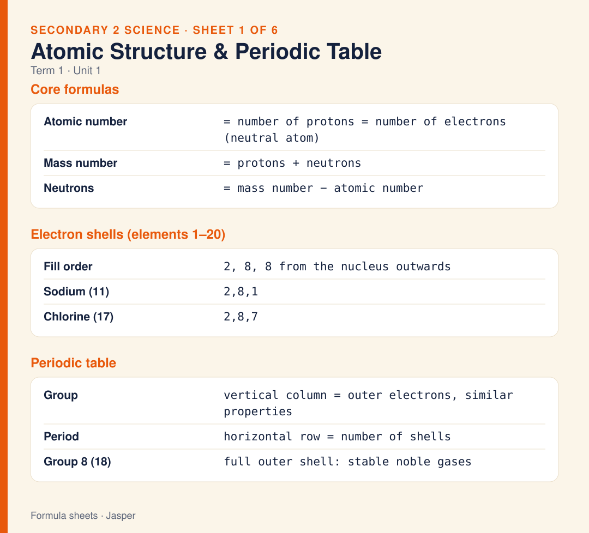

Sheet 1
Atomic Structure & Periodic Table
Atomic number = protons = electrons (in a neutral atom). Mass number = protons + neutrons, so neutrons = mass number − atomic number. Electrons fill shells 2, 8, 8 (sodium = 2,8,1; chlorine = 2,8,7). Groups are columns (outer electrons), periods are rows (number of shells).
Caption & source →